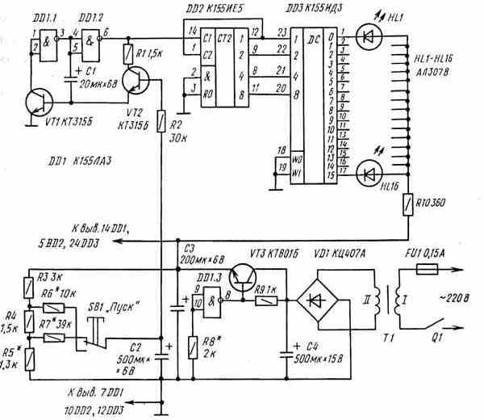
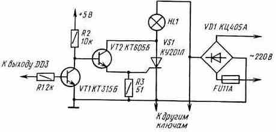

Игровое устройство "Рулетка"
В популярной телевизионной игре "Что? Где? Когда?" для определения очередного тура конкурса используют механический волчок, или рулетку. Раскручивают волчок до большой скорости и дают ему возможность свободно вращаться. Положение стрелки волчка после остановки укажет на адрес очередного вопроса или на музыкальную паузу.
Такое устройство можно сделать и электронным. На рис. 1 приведена его принципиальная схема.

Рис. 1 - Схема электронной рулетки
Схема генератора несколько отличается от использовавшейся в электронном кубике. Во-первых, транзистор VT1 повышает входное сопротивление логического элемента DD1.1, что позволяет применить конденсатор С1 сравнительно небольшой емкости. Во-вторых, частота генератора зависит от напряжения на базе транзистора VT2: чем больше это напряжение, тем больше и частота.
Нарастающее или убывающее напряжение формируется узлом, собранным на резисторах R3-R7, конденсаторе С2 и кнопке SB1. В исходном состоянии контактов кнопки, показанном на схеме, напряжение на конденсаторе С2 составляет примерно 1 В. При этом транзистор VT2 закрыт, его внутреннее сопротивление велико и .генератор не работает. Счетчик DD2 находится в произвольном состоянии, и светится один из светодиодов HL1-HL16. При нажатии кнопки SB1 "Пуск" конденсатор С2 начинает заряжаться. Ток базы транзистора VT2 плавно увеличивается, внутреннее сопротивление транзистора уменьшается, и начинает работать генератор, причем частота его импульсов постепенно увеличивается. Светодиоды HL1-HL16 расположены по окружности, поэтому создается впечатление кругового движения горящей точки (светится только один светодиод).
Когда конденсатор С2 зарядится до максимального напряжения, определяемого сопротивлением резисторов делителя, частота импульсов генератора станет максимальной. Теперь кнопку SB1 можно отпустить.
Начнется разрядка конденсатора С2, и частота генератора будет плавно уменьшаться. Через некоторое время внутреннее сопротивление транзистора VT2 увеличится настолько, что генератор остановится и будет гореть один из светодиодов HL1-HL16. Какой именно светодиод - заранее узнать невозможно. Именно эта особенность и позволяет использовать устройство в различных играх. Например, около каждого светодиода можно написать числа от 1 до 16 и соревноваться, кто больше очков наберет, скажем, за пять ходов (играют поочередно несколько участников). Если же каждому числу будет соответствовать какое-либо задание, которое должен выполнить участник, то с помощью рулетки можно проводить интересные конкурсы, викторины.
Устройство собрано в круглом корпусе диаметром 300 мм. На верхней крышке находятся 16 светодиодов, равномерно размещенных по окружности, и кнопка SB1 "Пуск" (в центре окружности). Выключатель питания Q1 и держатель предохранителя FU1 расположены на нижней крышке корпуса в углублении.
В устройстве можно применить следующие радиодетали. Транзисторы VT1, VT2 любые из серий КТ312. КТ315, КТ342, КТ3117. VT3 -типов КТ801, КТ807, КТ815 с любыми буквами. Светодиоды HL1-HL16 могут быть типов АЛ102; АЛ307; АЛ310 с любыми буквами Вместо них можно применять также миниатюрные лампы накаливания НСМ6,3-20, но при этом вместо резистора R10 следует поставить перемычку и включить резисторы сопротивлением 510. .680 Ом между выходами дешифратора DD3 и общим проводом (это уменьшит бросок тока при включении ламп накаливания, поскольку нити ламп все время будут разогреты небольшим током, протекающим через резисторы). Конденсаторы С1-С4 - типов К50-6, К50-16, К50-3. Резисторы - типа МЛТ-0,25. Кнопка SB1 - типа КМ1-1, П2К, выключатель питания - тумблер (МТ1, П1Т-1-1, Tl, T2 и др.). Трансформатор Tl - любой, имеющий вторичную обмотку на напряжение 8...12 В и ток не менее 200 мА (подойдут, например, без переделки трансформаторы типов ТВК-70Л2, ТВК-110ЛМ, ТВК-110Л2) Транзистор VT3 установлен на небольшом уголке площадью 15... 20 см - он служит радиатором.
При налаживании, прежде всего отключив от стабилизатора цепи питания микросхем, с помощью резистора R8 устанавливают на эмиттере VT3 напряжение 5 В. Затем восстанавливают цепи питания микросхем. Нажимают на кнопку SB1 "Пуск" и подбором резистора R6 устанавливают требуемую скорость "разгона" (т. е. скорость нарастания частоты генератора). Затем кнопку SB1 отпускают, резистор R7 закорачивают, резистор R5 временно заменяют переменным такого же номинала и, уменьшая его сопротивление, добиваются срыва колебаний генератора. После этого снимают перемычку с резистора R7, нажатием кнопки SB1 "Пуск" вновь "разгоняют" генератор, кнопку отпускают и подбором резистора R7 устанавливают требуемую скорость остановки. На этом налаживание можно считать законченным.

Рис. 2 - Схема бесконтактного ключа для выносного табло электронной рулетки
При использовании устройства в большом зале размеры его могут оказаться недостаточными. В этом случае целесообразно изготовить выносное табло размером 1. .1,5 м с лампами на напряжение сети и мощностью 40 ..60 Вт Для коммутации ламп применяют бесконтактные ключи на тринисторах (рис. 2). При подаче напряжения низкого уровня на вход ключа транзистор VT1 закрыт, а транзистор VT2 и тринистор VS1 открыты, лампа HL1 светится
При использовании выносного табло светодиоды HL1-HL16 можно не отключать от выходов дешифратора.